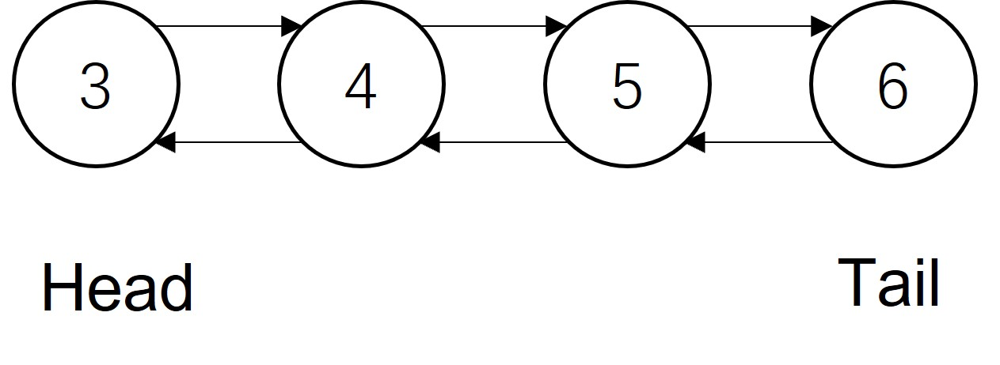

312 双向链表实现双端队列1
- 问题描述
- 双向链表实现双端队列
问题描述
使用双向链表设计实现双端队列

双向链表实现双端队列
我们同样可以使用双向链表来模拟双端队列，实现双端队列队首与队尾元素的添加、删除。双向链表实现比较简单，双向链表支持在指定结点的前后插入新的结点或者删除新的结点
一般双端队列具有以下属性：
- head： 队列的头结点
- tail： 队列的尾结点
- capacity: 队列的容量大小
- size: 队列当前的元素数量
双端队列具有以下方法
-
insertFront(value)：队列未满时，在队首头插入一个新的结点，并更新head和size
-
insertLast(value)：队列未满时，在队尾插入一个新的结点，并更新tail和size
-
deleteFront()：队列不为空时，删除头结点head，并更新head为后一个节点和size
-
deleteLast()：队列不为空时，删除尾结点tail，并更新tail为前一个节点和size
-
getFront()：返回队首结点指向的值，需要检测队列是否为空
-
getRear()：返回队尾结点指向的值，需要检测队列是否为空
小结
能够分析双向队列所具有的属性和方法并进行设计
掌握双向链表实现双向队列的方法
习题
- 如何在队首插入结点并更新head
- 如何删除头结点
打赏
赠人玫瑰，手有余香。您的打赏是我们前进的动力！